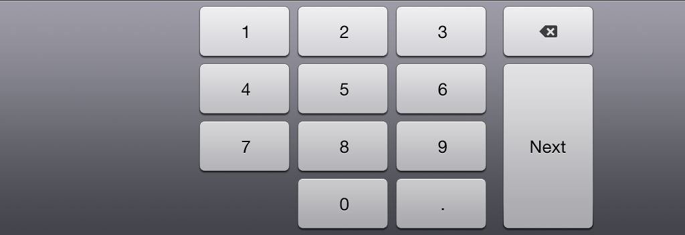

Number Only Keyboard for iPad
The iPad doesn't have a way to enter only numbers into a UITextField. Sure, you can use "numbers and punctuation", but that still gives the user a chance to enter errorous data.
To use:
keyboard = [[NumberKeyboard alloc] initWithNibName:@"NumberKeyboard" bundle:nil]; keyboard.textField = youTextField; keyboard.showsPeriod = NO; youTextField.inputView = keyboard.view;
Also, release the keyboard in dealloc and include "NumberKeyboard.h".
The GitHub project includes streatchable images for most key rows, so you can modify it into any number of different keyboards. It also has the PSD; the skys the limit.